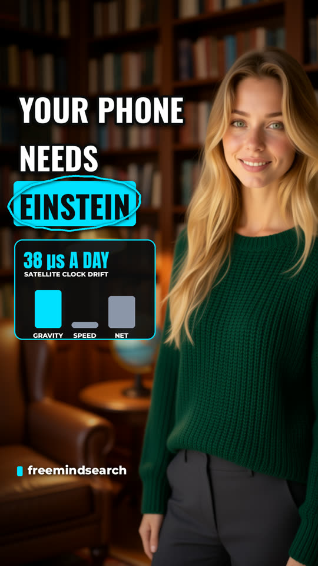

Story
Why your phone needs Einstein to find you
GPS works by timing signals from satellites, and one millionth of a second is about three hundred metres. Satellite clocks drift by about thirty-eight millionths of a second a day because of relativity, so engineers set them slightly slow before launch. The pictures are AI-generated.
Watch on FacebookWatch on InstagramWatch on TikTokWatch on YouTube
Did you know GPS needs Einstein, or is this new to you?
Sources
- GPS.gov, Space Segment: https://www.gps.gov/systems/gps/space
- GPS World, Inside the Box: GPS and Relativity: https://www.gpsworld.com/inside-the-box-gps-and-relativity/
- arXiv, Introducing Relativity in Global Navigation Satellite Systems: https://arxiv.org/pdf/gr-qc/0507121
- ESA Navipedia, GPS Space Segment: https://gssc.esa.int/navipedia/index.php/GPS_Space_Segment
Made with AI: the presenter, voice and visuals are AI-generated. Every story is researched and fact-checked by a person, with its sources listed.